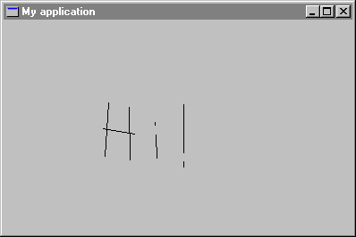

Step 4: Drawing lines in a window
In the next few steps, you will build a simple painting program that lets the user draw on the main window. You will do the following steps:
- Respond to left button clicks and drag by connecting the dots, resulting drawn lines.
- Respond to the right click by bringing up an input dialog, allowing the user to change the thickness of the line.
- Automatically redraw the window's contents by storing the points and redrawing them in response to a paint message.
Typically, a window will receive one left button down message, followed by a series of mouse move messages (one for each point dragged over), then followed by a single left button up message. The drawing model will be implemented as follows:
on_left_button_down (keys, x_pos, y_pos: INTEGER) is -- Initiate the drawing process. do if not button_down then button_down := true dc.get dc.move_to (x_pos, y_pos) end end on_mouse_move (keys, x_pos, y_pos: INTEGER) is -- Connect the points to make lines. do if button_down then dc.line_to (x_pos, y_pos) end end on_left_button_up (keys, x_pos, y_pos: INTEGER) is -- Terminate the drawing process. do if button_down then button_down := false dc.release end end
Attribute button_down has been introduced to draw the lines only when the user moves the mouse while the button is down.
button_down: BOOLEAN -- Is the left mouse button down?
Figure 5 shows what the application can do.
Figure 5

Here is the full text of MAIN_WINDOW:
class
MAIN_WINDOW
inherit
WEL_FRAME_WINDOW
redefine
on_left_button_down, on_left_button_up,
on_right_button_down, on_mouse_move,
closeable
end
creation
make
feature {NONE} -- Initialization
make is
-- Make the main window.
do
make_top ("My application")
!! dc.make (Current)
end
feature -- Access
dc: WEL_CLIENT_DC
-- Device context associated to the current
-- client window
button_down: BOOLEAN
-- Is the left mouse button down?
feature {NONE} -- Implementation
on_left_button_down (keys, x_pos, y_pos: INTEGER) is
-- Initiate the drawing process.
do
if not button_down then
button_down := true
dc.get
dc.move_to (x_pos, y_pos)
end
end
on_mouse_move (keys, x_pos, y_pos: INTEGER) is
-- Connect the points to make lines.
do
if button_down then
dc.line_to (x_pos, y_pos)
end
end
on_left_button_up (keys, x_pos, y_pos: INTEGER) is
-- Terminate the drawing process.
do
if button_down then
button_down := false
dc.release
end
end
on_right_button_down (keys, x_pos, y_pos: INTEGER) is
-- Invalidate window.
do
invalidate
end
closeable: BOOLEAN is
-- Does the user want to quit?
local
msgBox: WEL_MSG_BOX
do
!! msgBox.make
msgBox.question_message_box (Current, "Do you want to quit?", "Quit")
Result := msgBox.message_box_result = Mb_ok
end
end -- class MAIN_WINDOW